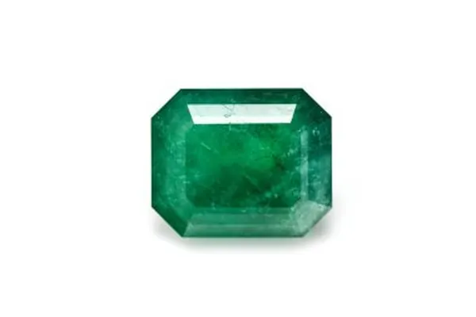

哥倫比亞祖母綠：木佐與契沃爾的傳說
哥倫比亞三個字，是祖母綠世界的「香檳產區」——木佐與契沃爾，各有各的綠。

核心定義
哥倫比亞是全球祖母綠最重要的產地之一，也是頂級祖母綠的代名詞：它出產了全球市場上大量高品質祖母綠，其中「木佐」（Muzo）與「契沃爾」（Chivor）兩大礦區最為著名。哥倫比亞祖母綠常帶產地溢價，頂級木佐綠更是收藏家的目標。
木佐祖母綠以「濃豔純正的綠」聞名，被譽為祖母綠顏色標竿；契沃爾祖母綠則偏藍綠、更明亮。兩者同屬哥倫比亞安地斯山脈的沉積型礦床——祖母綠結晶在黑色頁岩與偉晶岩的接觸帶中。
特徵與分類
| 礦區 | 顏色氣質 | 特徵 |
|---|---|---|
| 木佐 Muzo | 濃豔純綠、深沉 | 三相包裹體、顏色標竿 |
| 契沃爾 Chivor | 明亮偏藍綠 | 裂隙少、質地較清 |
| 科斯奎茲 Coscuez | 濃綠、產量較大 | 品質參差 |
哥倫比亞祖母綠的身分證是「三相包裹體」（three-phase inclusions）：同一氣泡裡同時有液體、氣體與固體結晶（如石鹽晶體）——這是哥倫比亞沉積礦床的經典標誌，鑑定師靠它在顯微鏡下一眼認出「哥倫比亞血統」。
科學原理
哥倫比亞祖母綠的綠色來源是鉻（與部分釩），鉻含量高讓木佐綠特別濃。它的形成環境是熱液型：含鈹的熱液與富含鉻的黑色頁岩反應，在低壓低溫下結晶——這與贊比亞（高溫變質）不同，也造成內含物特徵的差異。
三相包裹體的形成：結晶時捕獲了含鹽熱液，降溫後鹽析出晶體、氣體析出氣泡——同一氣泡內「液＋氣＋固」並存，是哥倫比亞的地質簽名。
鑑定與鑑別方法
- 顯微鏡找三相包裹體（哥倫比亞標誌）
- 看顏色：木佐濃綠、契沃爾偏藍綠
- 紫外燈與螢光特徵輔助判斷
- 比重與折射率確認綠柱石身分
- 對照權威實驗室產地報告（GIA/SSEF/Gübelin）
市場行情與保養建議
哥倫比亞產地溢價是祖母綠市場最顯著的分水嶺之一：同品質下，哥倫比亞祖母綠單克拉價常高於贊比亞與巴西。頂級無油木佐祖母綠，2 克拉以上即可在拍賣場拍出天價。
但「哥倫比亞」不是品質保證書——同一產地也有高低之分。買祖母綠，先看顏色與注油，再看產地：產地是敘事加分，品質才是根本。
常見誤區
哥倫比亞有傳奇礦區，但品質分布也參差；頂級贊比亞祖母綠可能勝過一般哥倫比亞貨。產地是統計優勢，不是個體保證。
產地鑑定靠內含物與微量元素分析，肉眼只能看顏色傾向——「這是哥倫比亞」必須由權威實驗室背書。
冷知識
西班牙殖民者 16 世紀就開始開採哥倫比亞祖母綠，而當地原住民（穆伊斯卡人）更早已把祖母綠當聖物。五百年來，它一直是世界祖母綠的中心。
木佐礦區有舊礦（歷史悠久的傳統坑道）與新礦之分，舊礦祖母綠因「老味道」與稀有度在市場上更有故事性。
反直覺觀點
頂級木佐綠常在濃綠中透著一抹藍綠（釩的貢獻），行家稱「blue-green」——純粹的黃綠反而一般。綠的最高境界，藏著一點藍。
哥倫比亞三個字值錢，於是誤稱、偽稱層出不窮。產地溢價越高，越需要實驗室證書——傳說與風險，總是一起漲價。